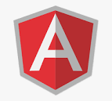

MAKE FRONTEND GREAT AGAIN!
Besedo
Angular.js GOES React

Objectives and criteria
- Update the existing code to React
- Describe the benefits of upgrading to a new framework
- Estimate resources / man-hours / required for the work
Angular.js
React
TypeScript

Enzyme
NPM
Visual Studio Code
GitLab
How do besedo work then?
Matthias method of creation
The 5 steps for how to rewrite Framworks
Step 1: create the visuals
skeleton for the Component
Step 2: Add the main functionality
You then take all functions from Angular and rewrite them with Typescript and make them work with the new skeleton
Step 3: Add the event functionality
Some functionality required here requires securing the previously implemented functions. These are usually features that show if an event has happened and its results.
Step 4: Add unit tests
I created test functions that implement an event and then see if the result is what I expected
Step 5: Code review
hand over the code to the company so that another programmer can comment on the outfall.